Why Pearson is not enough
A Pearson correlation matrix gives one scalar per pair of variables. Two things are discarded in that collapse:
- The shape of the association – linear, monotone non-linear, U-shaped, or irregular.
- The direction – whether y is a smooth function of x differs in general from whether x is a smooth function of y, because leverage and noise are directional.
janusplot fits both directions of every pair with
mgcv::gam() and draws both fits in a matrix. Each smooth
carries its effective degrees of freedom (EDF) and F-test, and
adjust can add covariates and random effects.
Quick start
janusplot_fit() fits every ordered pair once. Printing
the fit gives an overview, and plot() draws the matrix.
library(janusplot)
fit <- janusplot_fit(mtcars[, c("mpg", "hp", "wt", "qsec")])
fit
#> janusplot fit: 4 variables (mpg, hp, wt, qsec)
#> 6 pairs, 12 directed cells
#> engine = bam, method = fREML, adjust = none
#> no flags
#> Largest asymmetries:
#> hp <-> qsec A = 0.73 qsec ~ hp: EDF 1.0, p < 0.001, linear_down | hp ~ qsec: EDF 6.3, p < 0.001, warped_wave
#> hp <-> wt A = 0.45 wt ~ hp: EDF 3.1, p < 0.001, inverted_u | hp ~ wt: EDF 1.2, p < 0.001, concave_up
#> mpg <-> wt A = 0.02 wt ~ mpg: EDF 2.3, p < 0.001, convex_down | mpg ~ wt: EDF 2.4, p < 0.001, convex_down
#> mpg <-> hp A = 0.01 hp ~ mpg: EDF 3.0, p < 0.001, s_shape | mpg ~ hp: EDF 3.0, p < 0.001, convex_down
#> mpg <-> qsec A = 0.00 qsec ~ mpg: EDF 1.0, p = 0.017, linear_up | mpg ~ qsec: EDF 1.0, p = 0.017, linear_up
#> (1 pair with neither direction significant, not ranked)
#> Use summary() for the per-cell table and plot() for the matrix.
plot(fit)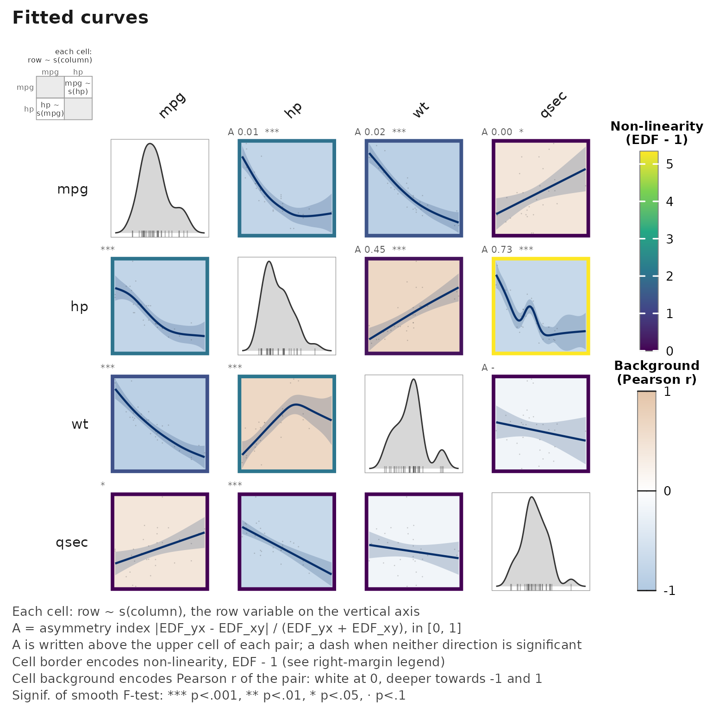
Asymmetric association matrix for four mtcars traits. Each cell shows the row variable as a smooth function of the column variable; the border colour is the cell’s non-linearity and the background its Pearson correlation.
Every view below draws from this one fit without refitting.
Each off-diagonal cell [r, c] shows
vars[r] ~ s(vars[c]): the row variable on the vertical
axis, the column variable on the horizontal axis, as in
pairs(). The key in the top-left corner states this with
the first two variables. In every cell:
- the raw points are grey, under the fitted spline and its 95% confidence band;
- the border colour is the non-linearity of that smooth, EDF minus 1: dark purple for a straight line, through green to yellow for a strongly bent curve;
- the background is the pair’s signed Pearson correlation, white at 0, blue towards -1 and orange towards +1;
- the strip above the panel carries the significance glyph of the
smooth’s F-test (
***p < .001,**p < .01,*p < .05,.p < .1; read from the multiplicity-adjusted p-value when the fit usesp_adjust) and, in the upper triangle, the asymmetry indexAof the pair (0 when both directions are equally complex; defined below), written once because it belongs to the pair.
The diagonal shows each variable’s kernel density with a rug of its
values: a skewed, bimodal or clipped variable shows there before it
bends a curve. With group, one density per level is drawn
in the group colour, scaled so the levels sum to the grey pooled
density.
The default annotations, shape legend and corner key depend on the
number of variables: from thirteen variables the strip carries the glyph
alone, and A is read from summary().
The two cells of a pair differ. Here qsec ~ s(hp) is a
straight line (EDF 1.00), while hp ~ s(qsec) bends (EDF
6.34), so the pair has the largest asymmetry index of the matrix, A =
0.73.
The matrix
What each cell encodes
colour_by chooses the quantity on the border:
"nonlinearity" (the default), "asymmetry", a
correlation ("pearson", "spearman",
"kendall"), "deviance_gap" (deviance explained
by the smooth minus that of the straight line) or "none".
background_by chooses the correlation behind the points, or
"none". annotations chooses what the strip
says (shape codes and categories are explained in Shape metrics
explained below), from "A", "edf",
"signif", "code" (the two-letter shape code),
"shape", "k_warn", "n",
"r" and "formula".
A synthetic example with a quadratic and a sinusoidal pair:
n <- 300
x1 <- runif(n, -3, 3)
d <- data.frame(
x1 = x1,
x2 = x1^2 + rnorm(n, sd = 0.6), # quadratic in x1
x3 = sin(x1) + rnorm(n, sd = 0.4), # sinusoidal in x1
x4 = rnorm(n) # independent
)
fit_nl <- janusplot_fit(d)
plot(fit_nl, annotations = c("code", "signif"))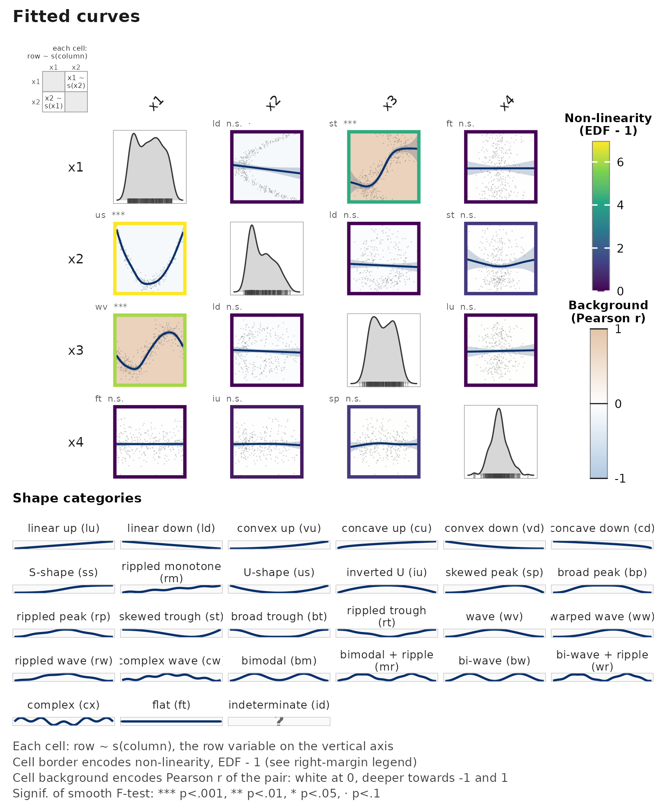
Association matrix for a quadratic pair, a sinusoidal pair and an independent variable. The border colour picks out the non-linear cells; the strip carries the shape code, decoded by the legend below.
x2 ~ s(x1) has EDF 7.9 and x3 ~ s(x1) has
EDF 7.0, and their borders are at the yellow end of the scale. The
Pearson correlation of x1 and x2 is -0.11, so
their background is almost white: the relationship is strongly quadratic
and nearly uncorrelated. With "code" among the annotations,
the legend of the 27 shape categories is attached below the matrix
(janusplot_style(show_shape_legend = TRUE) or
FALSE sets it whatever the annotations).
Asymmetry: a heteroscedastic example
When the noise scale depends on a predictor, the two directional smooths diverge: y \sim s(x) recovers the linear mean, while x \sim s(y) estimates E[x \mid y], which bends where the spread of y is largest.
n <- 400
x <- runif(n, 0, 5)
het <- data.frame(
x = x,
y = 0.5 * x + rnorm(n, sd = 0.3 + 0.4 * x), # variance grows with x
z = rnorm(n)
)
fit_het <- janusplot_fit(het)
plot(fit_het, colour_by = "asymmetry", annotations = c("A", "edf"))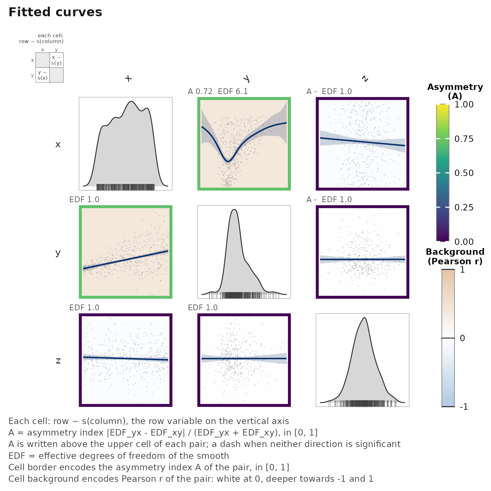
Association matrix for a heteroscedastic x-y pair (noise variance grows with x) plus an independent z, coloured by the asymmetry index A of each pair.
The asymmetry index of a pair compares the EDF of its two smooths,
A = |EDF_{y \sim s(x)} - EDF_{x \sim s(y)}| /
(EDF_{y \sim s(x)} +
EDF_{x \sim s(y)}) \in [0, 1], and is the same in both cells.
Here y \sim s(x) has EDF 1.00 and x \sim s(y) has EDF 6.07. The
x-y pair has A = 0.72; the pairs with the
independent z sit near A = 0. A is estimated from the
sample: at finite n, one direction of a REML-selected
smooth can pick up a spurious wiggle between two unrelated variables and
give their pair a clearly positive A.
A also depends on the distribution of the predictor, not only on the
relationship. When y is a straight line in x
plus noise, the mean of y given x is linear,
but the mean of x given y is linear only when
x is Gaussian. A uniform or otherwise bounded
x bends the reverse mean near the ends of the range. With
200 rows and a uniform x, a straight-line pair typically
has an A between 0.5 and 0.7, where a Gaussian x gives an A
near 0.05. Here x is uniform, so part of the
x-y index would appear with constant noise as
well. Read A beside both EDFs and the predictor’s distribution, not as a
measure of non-linearity on its own.
Shape labels describe the fitted smooth. They are not evidence of an
association: a smooth through pure noise with EDF near 1 still gets a
monotone label. The p-value carries the evidence, so
print() shows it beside each label, and the strip adds
“n.s.” to a shape code or glyph in a cell whose p-value is 0.05 or
more.
Colouring points by group
group colours the raw points by a factor, character or
logical column of the data. It is drawing only: the column never enters
the model.
pen_vars <- c("bill_length_mm", "bill_depth_mm", "flipper_length_mm",
"body_mass_g")
fit_pen <- janusplot_fit(palmerpenguins::penguins, pen_vars)
plot(fit_pen, group = "species")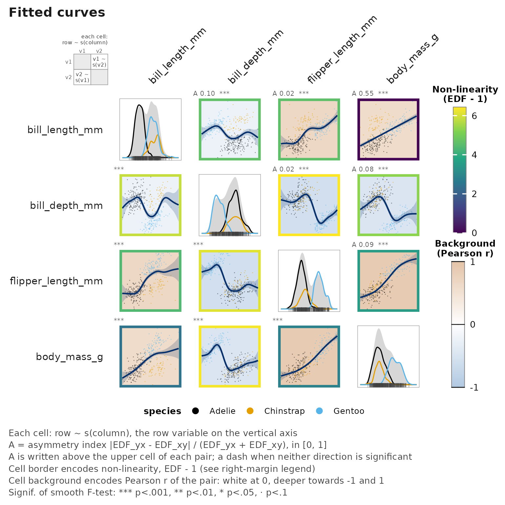
Palmer penguins trait matrix with the raw points coloured by species. The smooths are fitted across all three species.
The pooled curves of bill_depth_mm cut across the three
species clusters, so each pooled shape mixes within-species and
between-species trends. The section on adjustment below fits species in
the model.
Ordering the variables
For a larger matrix, order = "hclust" reorders the axes
by hierarchical clustering of the absolute Pearson correlations:
data(Boston, package = "MASS")
fit_boston <- janusplot_fit(Boston[, c("medv", "lstat", "rm", "age",
"indus", "nox", "dis")])
#> ℹ 3 of 42 cells flagged for possible k underfit.
#> ℹ 2.1 expected by chance at alpha = 0.05 across 42 tests.
#> ℹ Inspect `result$pairs[[i]]$k_check_*` or set `auto_refit_k = TRUE`.
plot(fit_boston, order = "hclust")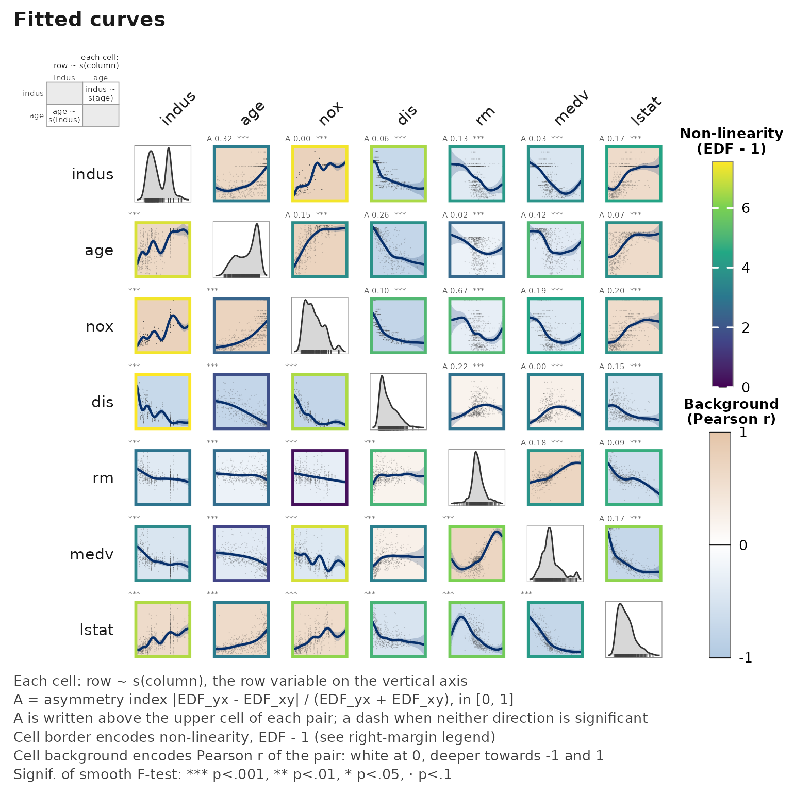
Boston housing matrix with axes reordered by hierarchical clustering on |correlation|: medv, lstat and rm group together, and age, indus, nox and dis form a second block.
The reordering places lstat (r = -0.74) and
rm (r = 0.70), the two variables most correlated with
medv, next to it, apart from the
age-indus-nox-dis
block, whose members all have |r| >= 0.6 with each
other.
Appearance: janusplot_style()
Every appearance setting lives in one janusplot_style()
object passed as style: the palette, where the colour is
painted (colour_channel = "border", "tile" or
"fill"), the points, the band, the text sizes, the legends
and the key. "border" colours the cell outline,
"tile" a small square in the bottom-right corner and
"fill" the whole panel. Printing a style lists the settings
that differ from the defaults.
st <- janusplot_style(colour_channel = "tile", palette = "magma")
st
#> janusplot style: 2 non-default values
#> colour_channel = "tile"
#> palette = "magma"
plot(fit, colour_by = "asymmetry", background_by = "none", style = st)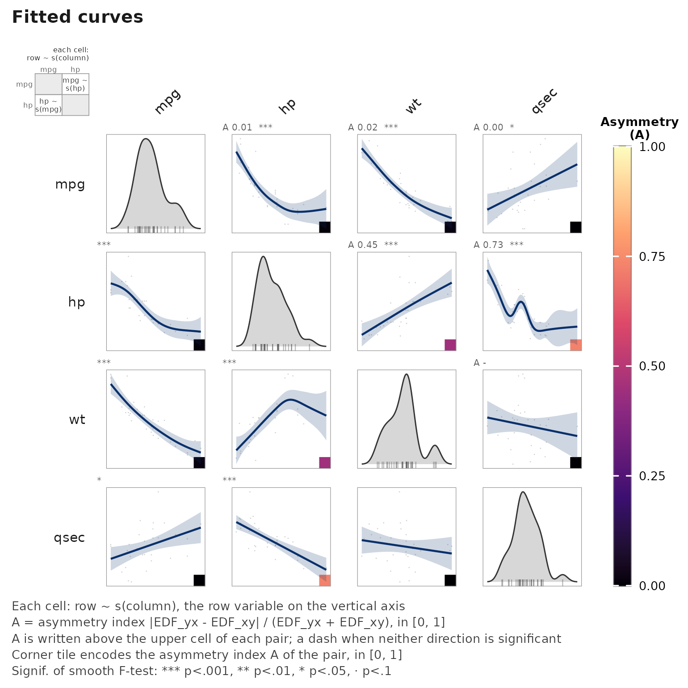
The mtcars fit redrawn with the asymmetry index on a corner tile, the magma palette, and no background.
The palette applies to the colour_by scale. A
correlation is symmetric around zero, so a correlation
colour_by is drawn on a diverging palette
(RdBu unless another diverging one is named); a sequential
palette given with a correlation is replaced by RdBu.
Colourblind-safe choices:
-
Sequential:
viridis(default),magma,inferno,plasma,cividis,mako,rocket,YlOrRd,YlGnBu,Blues,Greens. -
Diverging:
RdYlBu,RdBu,PuOr.
High-contrast but not colourblind-safe:
turbo, Spectral.
Width on the page
The default sizes are set for a figure one page wide (170 mm). For one journal column (85 mm), draw at most four variables with a fixed text size and without the shape legend and the glossary (the caption that explains the symbols):
narrow <- janusplot_style(text_size = 6, show_shape_legend = FALSE,
show_glossary = FALSE)
plot(fit, style = narrow)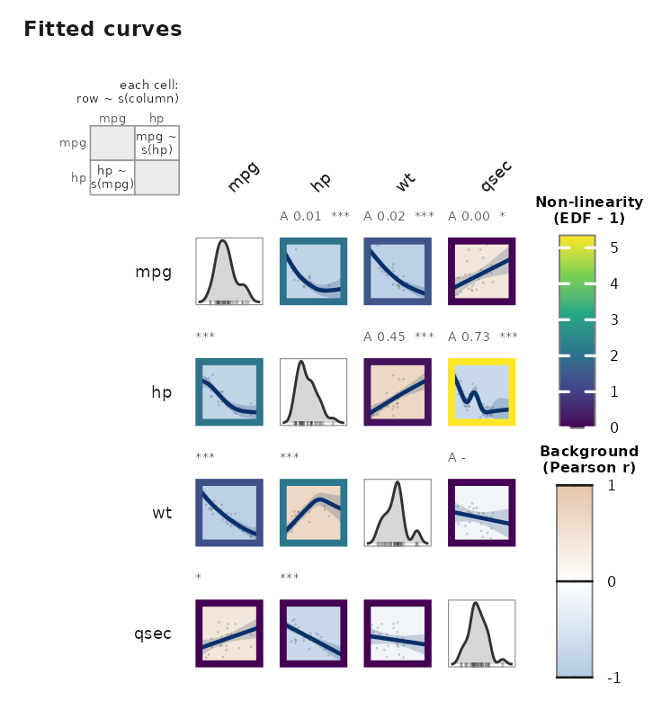
The mtcars matrix at one journal column, 85 mm wide, with 6-point text.
One call: janusplot()
janusplot() fits and draws in one call. It takes the
view arguments of plot() and passes model arguments
(k, engine, na_action and the
others of janusplot_fit()) through ...:
janusplot(mtcars[, c("mpg", "hp", "wt", "qsec")], order = "hclust")
# is the same figure as
plot(janusplot_fit(mtcars[, c("mpg", "hp", "wt", "qsec")]),
order = "hclust")Keep the fit when the same data will be drawn more than once.
The pair
The matrix is for finding pairs; janusplot_pair() shows
one pair at full size. The motorcycle-crash data of
MASS::mcycle record head acceleration (accel)
against time after impact (times).
fit_mc <- janusplot_fit(MASS::mcycle)
janusplot_pair(fit_mc, x = "times", y = "accel")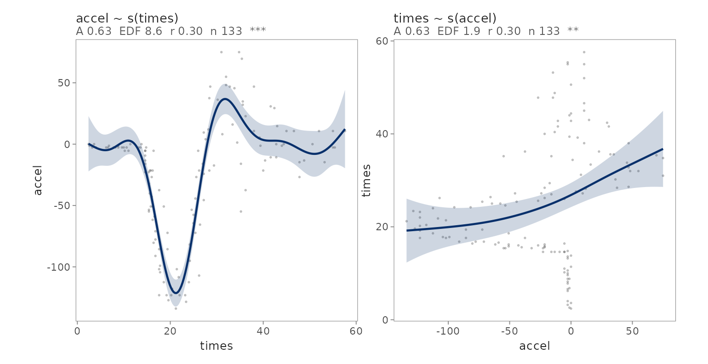
The two directions of the mcycle pair: acceleration as a smooth function of time on the left, time as a smooth function of acceleration on the right.
The left panel is accel ~ s(times), the right
times ~ s(accel). Each carries the model formula as its
title and a strip with the pair’s statistics: A, the EDF of
that direction, the Pearson correlation, the significance glyph and the
number of rows used. The acceleration trace is a wave in time (EDF 8.6);
time is a far simpler function of acceleration (EDF 1.9).
display = "both" overlays the two curves in one panel.
Both variables are standardised on the rows the pair used, and the
reverse fit is drawn with its axes swapped, so both curves share one
plane:
janusplot_pair(fit_mc, x = "times", y = "accel", display = "both")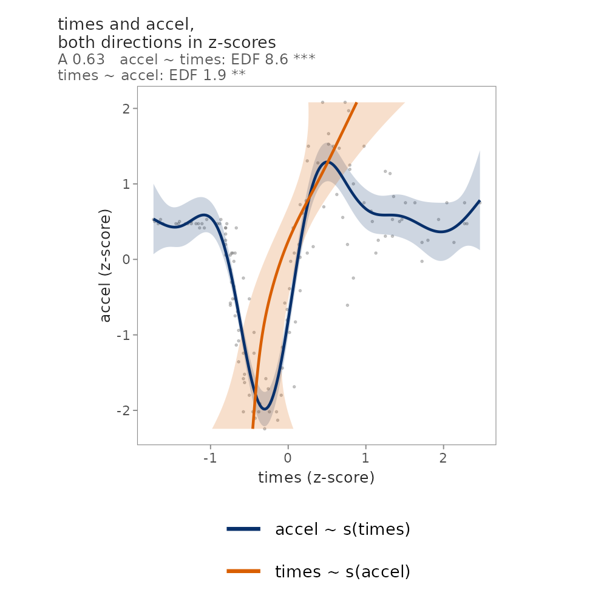
Both directions of the mcycle pair in one standardised panel.
Several pairs are drawn as blocks of two panels: the blocks stack top
to bottom, the stacks sit side by side (nrow blocks per
stack, ncol stacks), and the two panels of a pair stay
close together. Four pairs of the mtcars fit in two stacks:
janusplot_pair(fit,
x = c("hp", "wt", "qsec", "qsec"),
y = c("mpg", "mpg", "hp", "wt"),
ncol = 2L)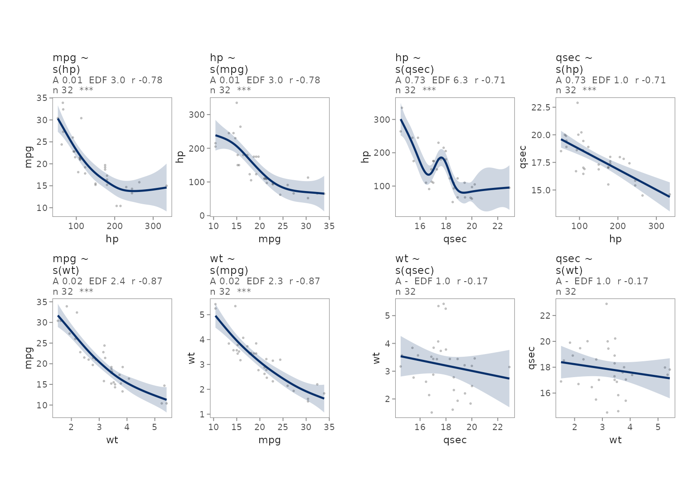
Four pairs of the mtcars fit, two blocks per stack in two stacks.
Marginal against adjusted: janusplot_compare()
adjust adds covariates and random effects to every
pairwise model, for example adjust = ~ species or
adjust = ~ s(site, bs = "re").
janusplot_compare() sets two fits of the same variables
side by side, cell by cell, and reports how each fitted shape moves.
fit_pen_adj <- janusplot_fit(palmerpenguins::penguins, pen_vars,
adjust = ~ species)
cmp <- janusplot_compare(fit_pen, fit_pen_adj,
labels = c("marginal", "species-adjusted"))
cmp
#> janusplot comparison: marginal against species-adjusted
#> 4 variables (bill_length_mm, bill_depth_mm, flipper_length_mm, body_mass_g), 6 pairs, 12 directed cells
#> adjust: marginal = none, species-adjusted = ~species
#> From marginal to species-adjusted, the shape changed in 10 of 12 directed cells (5 of 6 pairs), the archetype in 9 and the trend in 6.
#> Cells whose shape changed:
#> bill_length_mm ~ s(bill_depth_mm): shape bimodal -> concave_up, EDF 5.63 -> 2.78, A 0.10 -> 0.41
#> bill_length_mm ~ s(body_mass_g): shape linear_up -> convex_up, EDF 1.00 -> 1.08, A 0.55 -> 0.04
#> bill_depth_mm ~ s(bill_length_mm): shape bimodal -> s_shape, EDF 6.83 -> 1.17, A 0.10 -> 0.41
#> bill_depth_mm ~ s(flipper_length_mm): shape warped_wave -> convex_up, EDF 7.43 -> 2.65, A 0.02 -> 0.08
#> bill_depth_mm ~ s(body_mass_g): shape warped_wave -> concave_up, EDF 6.30 -> 1.51, A 0.08 -> 0.35
#> flipper_length_mm ~ s(bill_depth_mm): shape warped_wave -> s_shape, EDF 7.12 -> 3.10, A 0.02 -> 0.08
#> flipper_length_mm ~ s(body_mass_g): shape s_shape -> linear_up, EDF 4.55 -> 1.00, A 0.09 -> 0.48
#> body_mass_g ~ s(bill_length_mm): shape rippled_monotone -> linear_up, EDF 3.45 -> 1.00, A 0.55 -> 0.04
#> body_mass_g ~ s(bill_depth_mm): shape warped_wave -> s_shape, EDF 7.35 -> 3.15, A 0.08 -> 0.35
#> body_mass_g ~ s(flipper_length_mm): shape s_shape -> convex_up, EDF 3.81 -> 2.86, A 0.09 -> 0.48
plot(cmp, group = "species")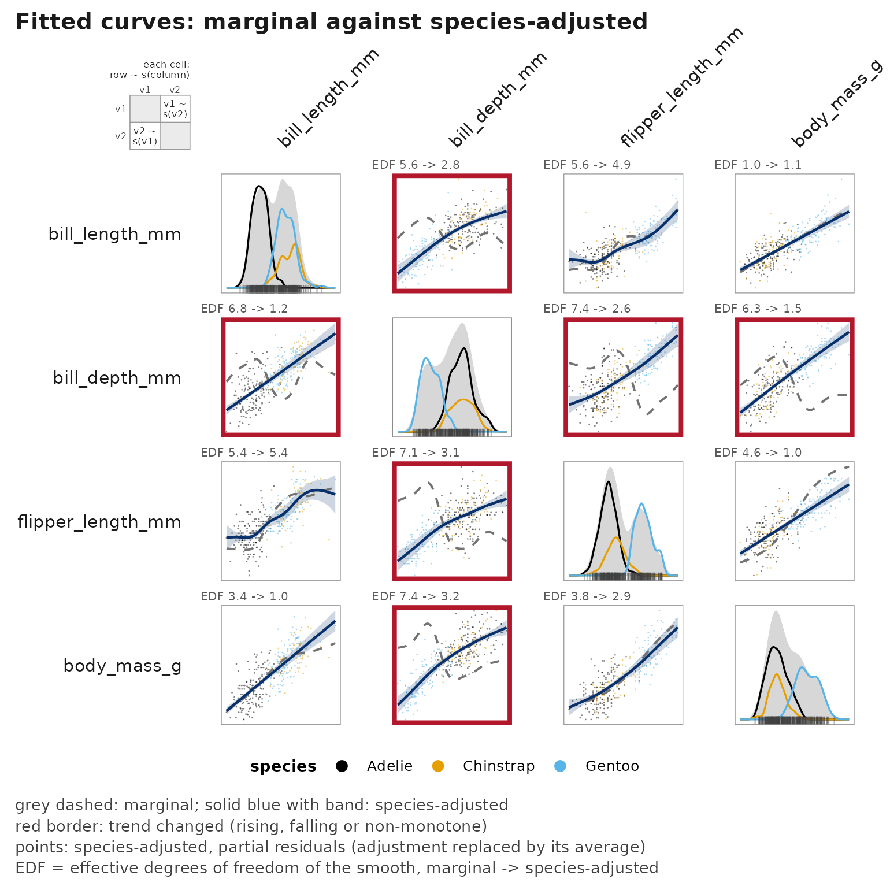
Penguin traits fitted marginally (grey dashed curves) and adjusted for species (solid curves with bands), points coloured by species. A red border marks a cell whose trend changed: rising, falling or non-monotone.
The shape label changes in 10 of the 12 directed cells once species
is in the model, and its trend (rising, falling or non-monotone) in 6 of
them, the cells with a red border. Pooled across species,
bill_depth_mm correlates negatively with the other three
traits (r from -0.58 to -0.24), and Gentoo penguins are both the largest
and the shallowest-billed. Adjusted for species, every curve involving
bill_depth_mm rises. The comparison shows how sensitive
each fitted shape is to the adjustment; why a shape moves is a question
for the study design. A fit with adjust draws no
correlation background in plot(), janusplot()
or janusplot_pair(): its curves are adjusted, while the
correlation is marginal.
Direction: janusplot_direction()
An asymmetry index says that the two directions of a pair are not
interchangeable; it does not say which variable drives the other.
janusplot_direction() tests whether one direction, and only
one, fits an additive-noise model. Under the additive-noise model y = f(x) + e with e independent of x, the model holds in at most one direction
for all but a small set of joint distributions. The function fits both
directions and tests each set of residuals for independence from its
predictor with a kernel (HSIC) permutation test.
janusplot_direction(fit_mc, x = "times", y = "accel", seed = 2026L)
#> janusplot direction test: times -> accel against accel -> times
#> verdict: undecided (no direction), reason neither_independent
#> Residuals stay dependent on the putative cause in both directions (p
#> = 0.00599 and 0.002). No additive-noise model fits this pair, so the
#> premise the directional test rests on does not hold here -- a hidden
#> common cause, feedback, or non-additive noise would all produce this.
#> HSIC residual independence (alpha = 0.05):
#> times -> accel p = 0.00599
#> accel -> times p = 0.002
#> n_used = 133 of n = 133 complete casesA "forward" or "reverse" verdict says that
the residuals are independent in that direction only, which is the
condition the additive-noise model needs; it is not a proof of
causation, since the model assumes no hidden common cause, no feedback
and additive noise. Every other pattern returns
"undecided": residuals independent in both directions, in
neither, or a linear relationship with Gaussian variables, where the
model cannot tell the directions apart. For the motorcycle pair the
verdict is "undecided": the residual spread changes with
time, so the residuals depend on the predictor in both directions. The
test is run on the marginal pair; a conditional test under
adjust is planned for 1.1.
The table: summary()
summary() returns one row per directed cell (one model,
y ~ s(x) or x ~ s(y)), with every number the
plots draw: EDF, raw F-test p-values and the multiplicity-adjusted ones
(janusplot_fit(p_adjust = "BH") or "holm";
equal to the raw values by default), deviance explained, the asymmetry
index and its signed version (directional_complexity,
positive in the cell whose smooth is the more complex), the three
correlations, the shape indices, counts and labels, the k-check columns
and any error.
tab <- summary(fit_het)
tab[, c("var_y", "var_x", "edf", "association_p", "asymmetry_index",
"shape_category")]
#> var_y var_x edf association_p asymmetry_index shape_category
#> 1 x y 6.067967 0.0000000 7.170307e-01 broad_trough
#> 2 x z 1.000017 0.2891825 7.388031e-06 linear_down
#> 3 y x 1.000010 0.0000000 7.170307e-01 linear_up
#> 4 y z 1.000003 0.9788085 6.481501e-07 flat
#> 5 z x 1.000003 0.2891757 7.388031e-06 linear_down
#> 6 z y 1.000002 0.9787890 6.481501e-07 flatEach row is the model var_y ~ s(var_x). The pair-level
fields, the prediction grids and the derivative curves are in
fit$pairs; the models themselves are kept with
janusplot_fit(keep_fits = TRUE).
Handling missing data
# airquality has missing values in Ozone and Solar.R
fit_aq <- janusplot_fit(airquality[, c("Ozone", "Solar.R", "Wind", "Temp")],
na_action = "pairwise")
plot(fit_aq, annotations = c("n", "signif"))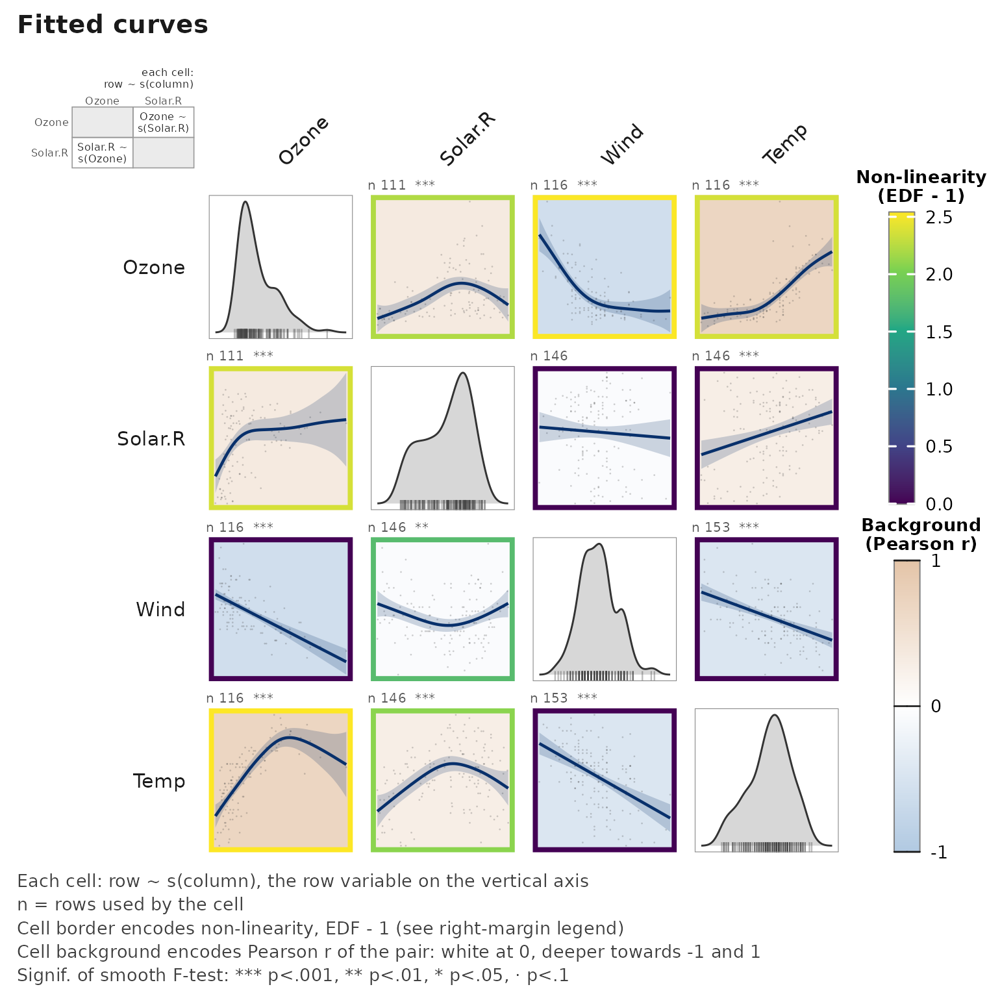
airquality matrix under pairwise NA handling: each cell is fitted from the rows complete for that pair, so the cells not touching Ozone or Solar.R use all 153 rows.
na_action = "pairwise" (the default) uses all rows for
which that pair is complete; "complete" restricts
to rows complete across every variable (listwise deletion). Here the
Wind-Temp cells are fitted on all 153 rows,
while a cell involving Ozone or Solar.R drops
only the rows missing on one of its two variables: more data per cell,
at the cost of cells fitted on slightly different samples. The
"n" annotation prints the rows each cell used.
Shape metrics explained
Every fitted smooth is summarised by two continuous indices and two
discrete counts. These drive the 27-category classifier and appear as
columns of summary(fit) and as fields of each entry of
fit$pairs.
Let f(x) be the fitted smooth on a grid of
n_grid equally spaced points across the predictor range
(200 by default; 100 for a fit made with
derivatives = integer()), with f' and
f'' the numerical first and second derivatives. Let
w(x) be the empirical density of the predictor on the same
grid, normalised to sum(w) = 1.
-
monotonicity_index(paper symbolM):M = sum(w * f') / sum(w * |f'|) in [-1, 1]+1means strictly increasing,-1strictly decreasing,0a non-monotone curve (bowl, dome, wave). -
convexity_index(paper symbolC):C = sum(w * f'') / sum(w * |f''|) in [-1, 1]+1means globally convex (bowl-up),-1globally concave (bowl-down),0inflection-dominated (S-curve, sine, flat).
Both indices are density-weighted so they describe the smooth
where the data actually live, not extrapolated tails, and are
invariant under a positive affine rescaling of
y: replacing y with a * y + b for
a > 0 leaves M and C
unchanged. For a < 0 both f' and
f'' flip sign, so M and C flip
sign too – a monotone-increasing relationship read off y
reads as monotone-decreasing off -y, as it should.
-
n_turning_points– count of interior extrema (sign changes off'), robust to noise via lobe-mass weighting. -
n_inflections– count of interior curvature flips (sign changes off''), same robust counting.
Together the pair (n_turning_points, n_inflections)
drives the primary shape_category dispatch;
(monotonicity_index, convexity_index) disambiguate within
the monotone (0, 0) cell. A curve with one turning point is
split by the type of that extremum, read from the sign of
f' on either side of it: a maximum gives
inverted_u, skewed_peak,
broad_peak or rippled_peak for 0, 1, 2 or 3+
inflections, and a minimum gives the reflected u_shape,
skewed_trough, broad_trough or
rippled_trough. Replacing y with
-y therefore maps each single-extremum category onto its
mirror, so the taxonomy is closed under reflection. The full taxonomy
with 2-letter codes, archetypes, and thumbnail curves is available from
janusplot_shape_hierarchy() and is drawn as a legend below
the matrix whenever the cells carry the shape code.
Tune the thresholds applied to these indices via
janusplot_shape_cutoffs(). The
shape_borderline column gives the distance from each label
to the nearest cutoff that would change it; small values mark labels a
slightly different smooth would move. See the shape-recognition-sensitivity
vignette for how faithfully the classifier recovers ground-truth shapes
across sample-size and noise regimes.
Derivative views: theoretical justification and applied use
Each matrix shows one quantity. display = "fit"
(default) shows the fitted smooth; display = "d1" shows
\hat f'(x);
display = "d2" shows \hat
f''(x). A title above the matrix names the mode.
janusplot_fit() computes both derivatives at fit time
(derivatives = 1:2) with a pointwise 95% band
(derivative_ci = "pointwise"), so the three views below are
drawn from one fit. Orders beyond two are not offered – see Noise
amplification below.
set.seed(2026L)
n <- 300L
xs <- runif(n, -pi, pi)
df <- data.frame(
x = xs,
y1 = xs + sin(3 * xs) + rnorm(n, sd = 0.15),
y2 = 0.5 * xs^2 + rnorm(n, sd = 0.8)
)
fit_df <- janusplot_fit(df)
plot(fit_df, display = "fit")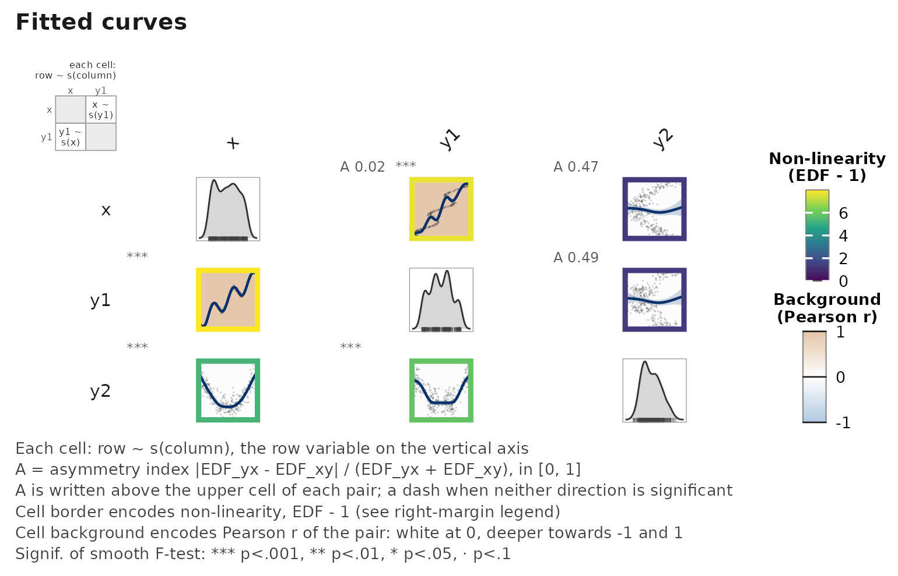
Fitted-smooth (level) view of x against a rippled-monotone y1 = x + sin(3x) and a convex y2 = 0.5x^2.
plot(fit_df, display = "d1")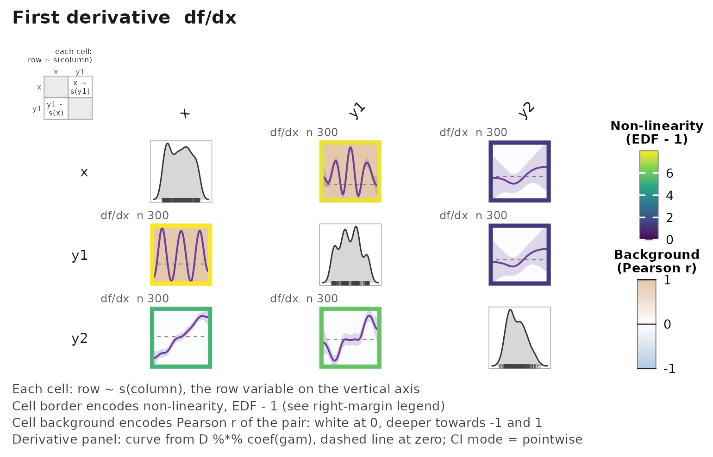
First-derivative view of the same three variables: the y1 panel oscillates around a positive baseline (a locally reversing gain despite the globally increasing fit above), while the y2 panel is the straight line f’(x) = x.
plot(fit_df, display = "d2")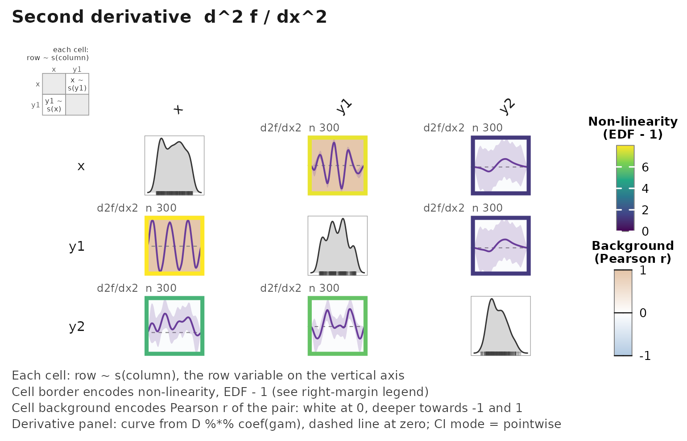
Second-derivative view: y1’s curvature oscillates through zero repeatedly (the sine term), while y2’s curvature is flat and positive (a constant second derivative, as expected for a quadratic).
Simultaneous bands use the Monte Carlo critical multiplier of Simpson (2018); they are chosen at fit time:
fit_sim <- janusplot_fit(df, derivative_ci = "simultaneous",
derivative_ci_nsim = 2000L)
plot(fit_sim, display = "d1")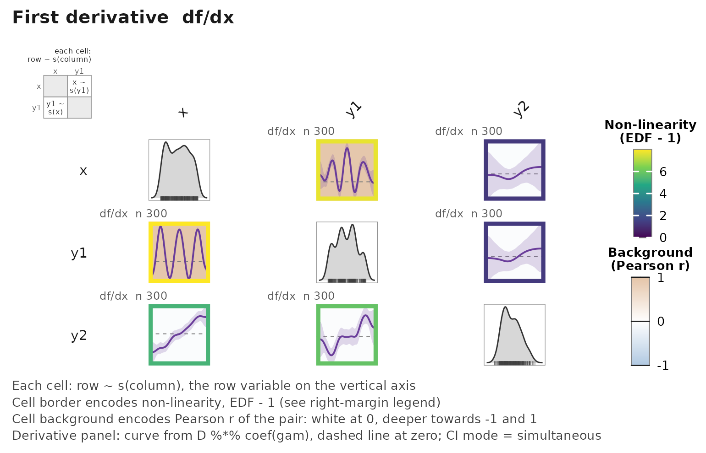
First-derivative view with simultaneous 95% Monte Carlo confidence bands: the y1 panel’s oscillation crosses zero with a band wide enough to show where a reversal is and is not distinguishable from noise.
What derivatives reveal that the fit hides
The fitted smooth \hat f(x) = \mathbb{E}[y\mid x] is a level description. Its derivatives are different statistical objects with their own interpretations:
- \hat f'(x) – the local rate of change of y in x. Zero crossings localise the turning points of \hat f; the sign of \hat f' gives the direction of monotonicity; the magnitude gives the sensitivity at the operating point x. In control engineering this is literally the process gain K(x) = \partial y / \partial u that gain-scheduled controllers are built around (Rugh & Shamma, 2000; Leith & Leithead, 2000). In causal analysis of a continuous treatment it is the derivative of the dose–response curve \mu'(t) = \partial \mathbb{E}[Y(t)] / \partial t, which Zhang & Chen (2025) argue is often the treatment-effect object of interest, not the curve itself.
- \hat f''(x) – the local curvature. Zero crossings localise the inflection points of \hat f; a persistently positive second derivative flags accelerating growth, persistently negative flags saturation (diminishing returns). \hat f'' is the input to the convexity index C defined earlier in this vignette, so the derivative panel exposes the local signal behind that scalar summary.
The asymmetric matrix layout sharpens this.
janusplot_fit() fits both \hat
f_{y\mid x}(x) and \hat f_{x\mid
y}(y), so the derivative panels of the two cells of a pair answer
different questions: the cell in row y,
column x is “how steeply does y respond to a nudge in x at this operating point” (forward gain);
the cell in row x, column y is “how steeply must x change to induce a unit change in y” (inverse sensitivity). For an asymmetric
process these do not transpose into each other, and the directional
asymmetry is a diagnostic the symmetric correlation matrix cannot expose
(Janzing & Schölkopf, 2010).
Estimation – the LP matrix
Let X_p = X_p(\mathbf{x}_g) denote
the design (linear predictor) matrix of the fitted GAM evaluated on the
plotting grid \mathbf{x}_g, obtained
from predict(gam_fit, newdata = ..., type = "lpmatrix")
(Wood, 2017, §7.2.4). With penalised posterior mean \hat{\boldsymbol\beta} =
\mathtt{coef(gam\_fit)} and posterior covariance V_p =
\mathtt{gam\_fit\$Vp}, we construct a finite-difference operator
D^{(k)} on the rows of X_p (central differences in the interior,
second-order forward / backward stencils at the endpoints) and read
off
\hat f^{(k)}(x_i) = \bigl[D^{(k)} \hat{\boldsymbol\beta}\bigr]_i, \qquad \widehat{\mathrm{Var}}\bigl(\hat f^{(k)}(x_i)\bigr) = \bigl[D^{(k)} V_p \bigl(D^{(k)}\bigr)^{\!\top}\bigr]_{ii}.
Pointwise 95\% intervals are \hat f^{(k)}(x) \pm 1.96\,\sqrt{\cdot}. This
is the standard Wood (2017) construction, and is what
gratia::derivatives() implements in its default mode
(Simpson, 2014; Simpson, 2018). Columns of X_p corresponding to adjust
terms held at typical values contribute identical rows across the grid,
so their finite differences are zero and they drop out of both \hat f^{(k)} and its variance – the
derivative in the panel is therefore the derivative of the partial
smooth actually shown in the fit panel, as expected.
For simultaneous intervals over the full grid (a stricter question
than pointwise, and what you want for formal feature localisation),
janusplot() implements the Monte Carlo construction of
Ruppert, Wand & Carroll (2003, §6.5), popularised for GAMs by
Simpson (2018): draw \tilde{\boldsymbol\beta}_b \sim
\mathcal{N}(\hat{\boldsymbol\beta}, V_p) for b = 1, \ldots, B and take the (1-\alpha) quantile of \max_i |D^{(k)}_i
(\tilde{\boldsymbol\beta}_b - \hat{\boldsymbol\beta})| /
\mathtt{se}_i across the plotting grid as a critical multiplier
c_\alpha on the pointwise SE, so the
simultaneous band is \hat f^{(k)}(x) \pm
c_\alpha\,\mathtt{se}(x). Choose it with
janusplot_fit(derivative_ci = "simultaneous"); the default
is the pointwise band, and derivative_ci = "none" stores no
band. The implementation uses B = 1000
(see derivative_ci_nsim); Simpson (2018) uses 10\,000, which is affordable when a tighter
quantile estimate is needed.
Noise amplification and why we cap at k = 2
Finite differencing of raw data amplifies noise; penalised splines do
not eliminate that amplification, they trade it against bias via the
REML-selected smoothing parameter. mgcv’s default m = 2 thin-plate penalty is an L2 penalty on
\int (f'')^2, which controls
\hat f' pointwise but leaves \hat f^{(3)} unpenalised and bounded only by
the basis rank k (Wood, 2017, §5.3;
Eilers & Marx, 1996) – this is the actual mechanism behind the k \ge 3 refusal below, not a general claim
that third derivatives are unusable. Consequently \hat f^{(3)} is the derivative most exposed
to noise amplification at ordinary sample sizes and moderate k, and so janusplot refuses k \ge 3 by design. For a domain-specific need
of a higher-order derivative, specify a matching-order P-spline penalty
explicitly (Eilers, Marx & Durbán, 2015) and differentiate the
models kept by janusplot_fit(keep_fits = TRUE).
Applied use: gain estimation and dose–response
Two strands in which the asymmetric derivative view is not a cosmetic add-on but the analytical primitive the practitioner actually wants.
- Process-gain scheduling. In adaptive and gain-scheduled control, the controller is indexed by the local process gain K(x) = \partial y / \partial u (Rugh & Shamma, 2000). For a steady-state input-output dataset, \hat f_{y\mid u}'(u) is a direct data-driven estimate of K(u), and its simultaneous CI tells the engineer whether the local gain is distinguishable from a reference gain over an operating envelope. The inverse panel \hat f_{u\mid y}'(y) is the feedforward-linearisation sensitivity; a large divergence between the two panels flags that a naive inverse controller will under-perform (Korda & Mezić, 2018). The matrix view makes a fleet of such pairs inspectable at once.
-
Derivative of the dose–response curve as the causal
estimand. For a continuous treatment T with unconfoundedness, the dose–response
\mu(t) = \mathbb{E}[Y(t)] and its
derivative \mu'(t) are both
estimable, and recent work (Zhang & Chen, 2025) argues \mu'(t) is often the more directly
interpretable quantity – it answers “how much does the expected outcome
change per unit shift in treatment at this dose?” This is structurally
the same estimand as the process gain above; the asymmetric-matrix
derivative panel delivers both forward and reverse-conditioned
derivative curves in the same frame, which is a direct diagnostic for
Simpson’s-paradox-style conditioning reversals (visible, for example, in
the penguins
bill_depth_mm\timesbody_mass_gpair oncespeciesis adjusted for).
References cited in this section
Eilers, P. H. C., & Marx, B. D. (1996). Flexible smoothing with B-splines and penalties. Statistical Science, 11(2), 89–121. https://doi.org/10.1214/ss/1038425655
Eilers, P. H. C., Marx, B. D., & Durbán, M. (2015). Twenty years of P-splines. SORT, 39(2), 149–186.
Janzing, D., & Schölkopf, B. (2010). Causal inference using the algorithmic Markov condition. IEEE Transactions on Information Theory, 56(10), 5168–5194. https://doi.org/10.1109/TIT.2010.2060095
Korda, M., & Mezić, I. (2018). Linear predictors for nonlinear dynamical systems: Koopman operator meets model predictive control. Automatica, 93, 149–160. https://doi.org/10.1016/j.automatica.2018.03.046
Leith, D. J., & Leithead, W. E. (2000). Survey of gain-scheduling analysis and design. International Journal of Control, 73(11), 1001–1025. https://doi.org/10.1080/002071700411304
Rugh, W. J., & Shamma, J. S. (2000). Research on gain scheduling. Automatica, 36(10), 1401–1425. https://doi.org/10.1016/S0005-1098(00)00058-3
Ruppert, D., Wand, M. P., & Carroll, R. J. (2003). Semiparametric Regression. Cambridge University Press.
Simpson, G. L. (2014). Simultaneous confidence intervals for derivatives of smooth terms in a GAM. From the Bottom of the Heap (blog post).
Simpson, G. L. (2018). Modelling palaeoecological time series using generalised additive models. Frontiers in Ecology and Evolution, 6, 149. https://doi.org/10.3389/fevo.2018.00149
Wood, S. N. (2017). Generalized Additive Models: An Introduction with R (2nd ed.). Chapman and Hall/CRC. https://doi.org/10.1201/9781315370279
Zhang, Y., & Chen, Y.-C. (2025). Doubly robust inference on causal derivative effects for continuous treatments. arXiv preprint [2501.06969].
Limitations
- Pairwise view:
adjustputs the same covariates in every cell, but each cell is still one smooth of one variable on another. Complement it with a multivariate model. - EDF depends on basis dimension
k; defaults are sensible but domain-specific tuning is encouraged. - The asymmetry index should not be interpreted causally without strong assumptions.
-
monotonicity_indexandconvexity_indexare scale-invariant inybut sensitive to the predictor-density weighting – they describe the smooth on the observed support ofx, not outside it. - A matrix shows one quantity (fit, d1 or d2). To compare the fit with
its derivatives, call
plot()on the same fit once perdisplay; nothing is refitted. - Derivative panels carry pointwise 95% bands by default, valid at
each point separately. For feature localisation over the whole range,
fit with
derivative_ci = "simultaneous"(Simpson, 2018). - The shape metrics (
M,C, turning and inflection counts) are computed on then_gridgrid, 200 points by default. A fit made withderivatives = integer()uses 100 points, which can shift these values slightly and move a label that sits near a cutoff.
Citation
citation("janusplot")
#> To cite janusplot in publications use:
#>
#> Moldovan M (2026). _janusplot: Asymmetric Smoothed-Association
#> Matrices via GAM Fits_. R package version 1.0.0,
#> <https://github.com/max578/janusplot>.
#>
#> A BibTeX entry for LaTeX users is
#>
#> @Manual{,
#> title = {janusplot: Asymmetric Smoothed-Association Matrices via GAM Fits},
#> author = {Max Moldovan},
#> year = {2026},
#> note = {R package version 1.0.0},
#> url = {https://github.com/max578/janusplot},
#> }